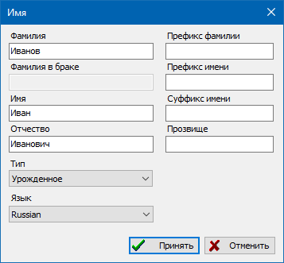

Имена предназначены для хранения в персональных записях всех личных имен, с различной полнотой указания частей, на различных языках, различных типов.
Имена добавляются на одноименной закладке в основном диалоге редактирования персональной записи.

Нажатие клавиш [ Ctrl + Down ] в полях ввода фамилии, фамилии в браке, имени и отчества - приводит к "унификации" соответствующей строки, первые буквы слов становятся заглавными, остальные - строчными.
Внимание: использование символа "/" в основных полях имени (фамилии, имя, отчество) - запрещено, это может приводить к ошибкам в базе данных.
Также смотрите: Персоны, Языковые культуры.